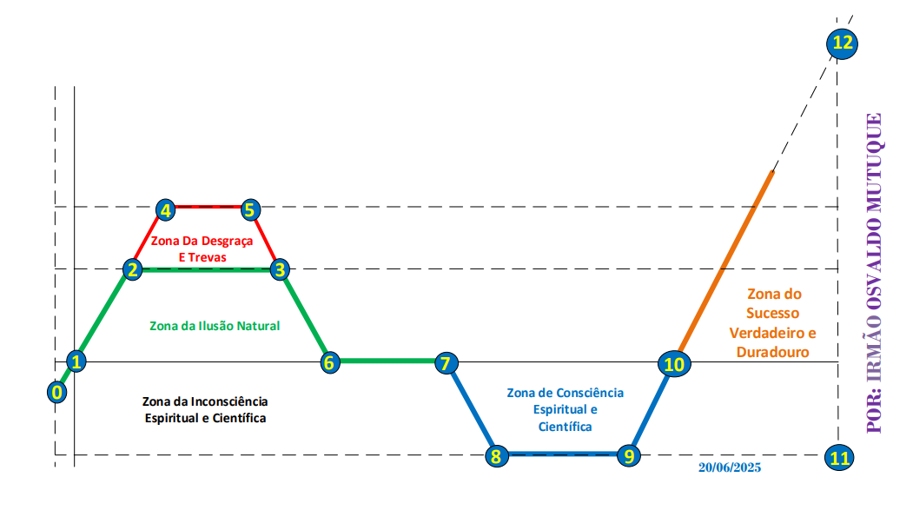

Volume 2

Por: Osvaldo Mutuque
AS 7 LEIS DA PLENITUDE DO SUCESSO
Como construir uma vida sólida, próspera e duradoura
Introdução
O verdadeiro sucesso não acontece por acaso. Não depende apenas da sorte, das oportunidades ou das circunstâncias favoráveis. É construído ao longo do tempo, sustentado por princípios e revelado através dos processos da vida.
Todos desejam crescer, vencer e prosperar. Existe em cada ser humano uma necessidade profunda de realização, propósito e crescimento. No entanto, embora muitos procurem o sucesso, poucos compreendem aquilo que realmente o sustenta.
Talvez seja por isso que tantas pessoas acabam frustradas ao longo do caminho. Algumas alcançam conquistas e, mais tarde, perdem tudo. Outras crescem rapidamente, mas não conseguem permanecer. Há ainda aquelas que aparentam sucesso por fora, enquanto carregam vazio, desordem e instabilidade no seu interior.
Surge então uma pergunta inevitável: se todos desejam vencer, por que razão tantos acabam por falhar?
Este livro nasce dessa reflexão.
Com a graça de Deus, a direcção do Espírito Santo e a abertura do teu coração, espero que esta obra te ajude a compreender melhor os processos da vida, a reconhecer a fase em que te encontras e a perceber que certas etapas não representam o fim, mas fazem parte da preparação para algo maior.
O objectivo deste livro não é apenas falar sobre sucesso. É conduzir o leitor a uma reflexão profunda sobre si mesmo, ajudando-o a desenvolver clareza, maturidade e propósito. Os princípios apresentados nestas páginas podem ser aplicados em qualquer área da vida — espiritual, pessoal, emocional, familiar, profissional, académica, ministerial ou financeira.
Porque existem verdades que permanecem universais:
Neste volume de O Mapa de uma Vida de Sucesso são abordadas sete etapas fundamentais da jornada:
Cada uma destas etapas representa uma fase importante do desenvolvimento humano e espiritual. Algumas confrontam; outras revelam. Algumas quebram estruturas antigas; outras restauram, fortalecem e preparam a pessoa para níveis mais elevados de maturidade e responsabilidade.
Uma das maiores ilusões da vida é acreditar que todo o sucesso aparente corresponde a verdadeiro sucesso. Nem tudo o que brilha possui valor duradouro. Nem tudo o que parece firme está realmente sustentado por uma base sólida.
O verdadeiro sucesso nasce de dentro para fora. Antes de confiar grandes responsabilidades a alguém, Deus trabalha o coração, a mente, o carácter e a maturidade dessa pessoa. Sem estrutura interior, qualquer crescimento exterior torna-se instável.
Por isso, este livro apresenta as Sete Leis da Plenitude do Sucesso:
Estas leis representam uma jornada de transformação: da crise ao propósito, da confusão à clareza, da instabilidade à maturidade e do crescimento à plenitude.
No Mapa da Vida, esta fase representa um dos níveis mais elevados da jornada humana: o ponto onde convergem maturidade espiritual, equilíbrio emocional, sabedoria prática e prosperidade com propósito.
Mas este nível não se alcança por acaso. Não existem atalhos para uma vida sólida. Não existe plenitude sem processo, nem permanência sem estrutura.
Se estás numa fase de reconstrução, crescimento ou transformação interior, esta mensagem é para ti. Não desprezes a etapa em que te encontras. Cada processo tem uma função, cada experiência traz um ensinamento e, muitas vezes, aquilo que parece um atraso é apenas uma preparação para algo maior.
Que esta leitura te ajude a compreender uma verdade essencial: muitas vezes, aquilo que parece o fim é apenas o início de uma nova fase da tua construção interior.